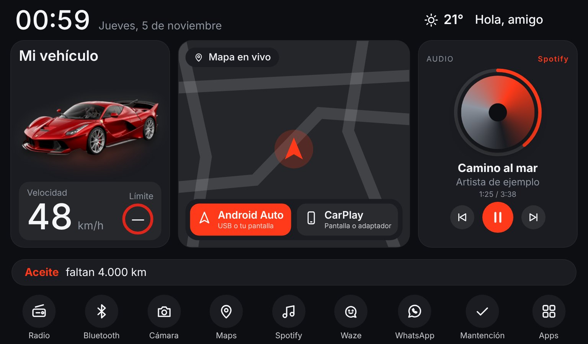
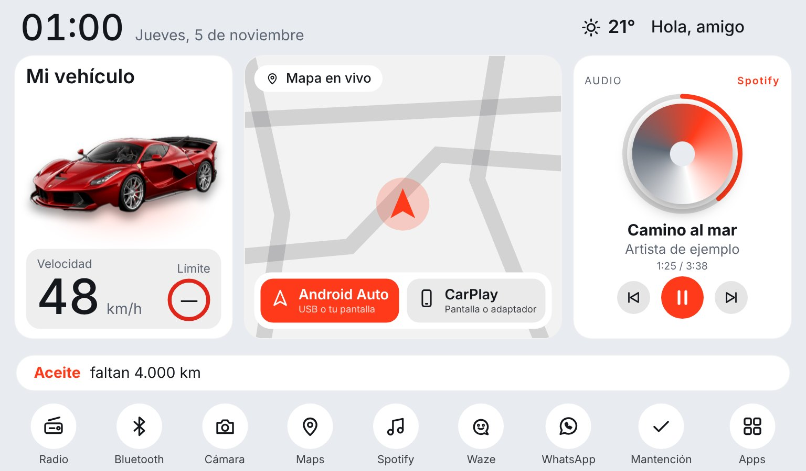
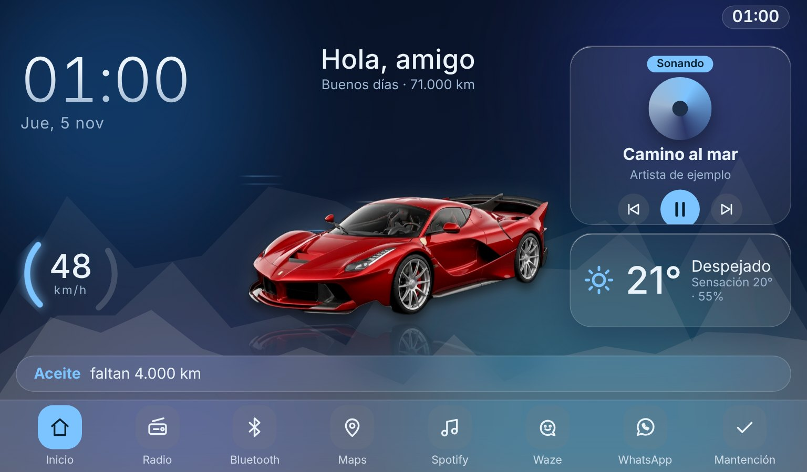

Tu foto, sin fondo
Tu auto recortado, desde el celular.
Diséñala gratis en un minuto.

Tu auto recortado, desde el celular.
Tu posición y rumbo, de día y de noche.
Un botón para cada uno.
Lo que suena, a la vista.
Aceite, revisión técnica y permiso.
Por GPS, con aviso si te pasas.
Te avisa al entrar si hoy te toca.
Te saluda por tu nombre.
Cambia sola cuando enciendes las luces.
Se adapta a radios verticales.
Bienvenida animada al encender.
Sin volver al sitio.
Con un scanner OBD2 (opcional). Sin él, todo funciona igual.
12 temas, 9 distribuciones y tus colores.


Mírala en vivo, de día y de noche.
Así se verá en tu radio (1024 × 600)
El clima, la canción y el límite de velocidad son de ejemplo.
Con tu país activamos el aviso de restricción que te corresponde: restricción vehicular en Chile y pico y placa en Colombia y Ecuador, y Hoy No Circula en México. Si tu país no está, elige «Otro»: no se aplica ninguna restricción.
Con «Otro» no se muestra ni se avisa ninguna restricción vehicular ni pico y placa.
Funciona en radios Android de pantalla grande.
Toca el botón de inicio (la casita). ¿Ves íconos de apps como Play Store, Chrome o YouTube?
Busca en los ajustes de la radio la pantalla con la versión. Según la marca se llama:
Si no puedes hacer captura, tómale una foto con el celular. Es opcional, pero la analizamos para evitar sorpresas. No guardamos la imagen.
Si tu radio es de pantalla grande con apps y ya tiene Android Auto o CarPlay, no se toca: sigue funcionando igual y puedes ponerlo en tu barra de apps.
Si tu radio es la original del auto y solo tiene Android Auto o CarPlay, no es compatible: eso es tu celular mostrándose en la pantalla, no la radio por dentro.
Sube una foto de tu auto: es la que verás en la pantalla de la radio. Nosotros solo le quitamos el fondo.
No importa el fondo: la calle, tu garaje o el estacionamiento sirven. El fondo se quita aquí mismo, en tu celular. Tu foto se queda en tu celular; solo se envía si pides «Detectar los faros con IA» o si descargas la app con tu diseño (para ponerla dentro, sin guardarla).
Es un PNG con tu auto recortado. Pásalo a tu radio y elígelo en la app, en Ajustes → Foto de tu auto: se verá recortado.
Cuando prendes las luces del auto, la radio pasa sola a modo noche y muestra tu foto con los faros encendidos. Toca cada faro (y los neblineros, si tiene) en la foto de abajo.
Mientras no subas tu foto, mostramos un auto de ejemplo.
Con el movimiento «Además, carretera», la radio muestra tu auto visto desde atrás sobre la ruta. Con una foto trasera se ve tu auto de verdad; sin ella, se dibuja uno parecido con tu color. Tu foto se queda en tu celular: solo viaja, una vez y sin guardarse, si pides la app con tu diseño.
Sirve para sugerirte fondos y diseños (por ejemplo, los de camioneta 4x4). Tu foto no cambia.
La frase reemplaza al “Buenas tardes” en la pantalla y en el saludo por voz. Déjala vacía para el saludo normal.
Si la escribes, aparece en el diseño “Tablero”.
Elige cómo se verá la pantalla de inicio de tu radio. Lo ves en vivo a la derecha.
“Automática” cambia sola con la hora del día.
Una carretera, tu ciudad o tu familia, o el logo de tu negocio. Se queda en tu celular; solo viaja, una vez y sin guardarse, si descargas la app con tu diseño.
Sube varias tomas de tu auto (de frente, de lado, de atrás, el interior…) y las juntamos en un solo fondo. Si quieres, súmale el logo y el nombre de la marca. Todo se arma en tu celular y, si descargas la app con tu diseño, el fondo viene dentro (pasa una vez por nuestro servidor y no se guarda).
El launcher abre las apps que ya tengas instaladas en la radio.
Activa solo lo que te sirva. Los avisos son una ayuda y pueden fallar: no reemplazan las señales de tránsito ni el manual de tu auto.
Tablero es gratis y no necesita código. Descarga la app con tu diseño ya puesto, o descárgala normal y arma todo desde la radio.
Si subiste la foto de tu auto o un fondo propio (o un mosaico), también vienen dentro de la app (pasan una vez por nuestro servidor para ponerlos ahí y no se guardan). Si prefieres no enviarla, quítala en el paso 2 y elígela después en la app, en Ajustes → Foto de tu auto.
Descargar la app sin mi diseño · Cómo instalarla en la radio
¿Te gusta Tablero? Invítame un café ☕ (opcional).
Cada regla muestra su fuente y hasta cuándo vale.
☕ ¿Quedó andando? Invítame un café. Es un regalo, nunca una obligación.
Si es Android de pantalla grande, casi seguro. Sube una captura en el paso 1 y la revisamos.
Nada. Sin anuncios, sin cuenta y sin código. Si te sirve, puedes invitarme un café ☕.
Si puedes instalar apps como YouTube o Waze, sí. Si solo muestra tu celular por Android Auto o CarPlay, no.
No. Es opcional. Sirven los ELM327 por Bluetooth o Wi-Fi; los solo Bluetooth LE aún no.
Siguen igual. Tablero solo cambia la pantalla de inicio.
No para usarla. El clima y los mapas nuevos sí; los mapas guardados se ven sin conexión.
Con un café ☕. Ayuda a probar más radios y a seguir mejorando Tablero. Es opcional.
Escríbenos con una foto o video. Si no se arregla, la desinstalas y tu radio queda como antes.
Escríbenos y te respondemos.
Tablero es gratis y lo hace una sola persona. Tu café ayuda a probar más radios.